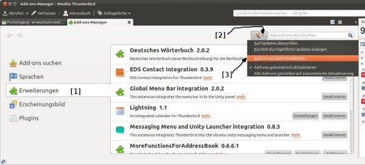

Datenmigration
Archivierte Anleitung
Dieser Artikel wurde archiviert, da er - oder Teile daraus - nur noch unter einer älteren Ubuntu-Version nutzbar ist. Diese Anleitung wird vom Wiki-Team weder auf Richtigkeit überprüft noch anderweitig gepflegt. Zusätzlich wurde der Artikel für weitere Änderungen gesperrt.
Zum Verständnis dieses Artikels sind folgende Seiten hilfreich:
Diese Anleitung erklärt, wie man mit dem E-Mail-Programm Thunderbird Daten importieren und exportieren kann. Hauptaugenmerk liegt dabei auf dem Import des Thunderbird-Profils von Windows.
Da Mozilla Thunderbird nur die Daten von bestimmten, bereits installierten E-Mail-Programmen importieren kann, müssen die Daten von einer anderen Quelle (z.B. anderer Rechner, anderes Laufwerk oder andere Partition) manuell übertragen werden. Das ist aber nicht sonderlich schwer, da Thunderbird unter Linux und Windows übereinstimmende Dateistrukturen verwendet.
Während der folgenden Schritte darf Thunderbird nicht in Benutzung sein. Außerdem ist zu beachten, dass sich ein POP3-Konto insofern von einem IMAP-Konto unterscheidet, dass alle Daten lokal gespeichert werden. Im Folgenden wird nur auf POP3-Konten eingegangen, obwohl theoretisch das Kopieren des Profil-Ordners auch für IMAP funktionieren sollte.
Windows XP-Profil importieren¶
Hinweis:
Eine Übersicht über die Unterschiede der Verzeichnisorte je nach verwendeter Windowsversion findet man unter
Die Windows-Partition, auf der die Daten liegen, muss in Ubuntu gemäß dieser Anleitung eingebunden werden, falls noch nicht geschehen. An dieser Stelle wird von einer Einbindung unter
/media/windows_c
ausgegangen.
Die Konfigurationsdateien befinden sich unter Linux als verstecktes Verzeichnis im Homeverzeichnis. Dieses muss man erst im verwendeten Dateimanager anzeigen lassen. Normalerweise funktioniert dies über "Ansicht → Verborgene Dateien anzeigen" bzw. Strg + H .
Zuerst bringt man evtl. vorhandene Thunderbird-Daten in Sicherheit. Dies geschieht einfach durch Umbenennen des vorhandenen Ordner /home/BENUTZERNAME/.thunderbird/, z.B. in /home/BENUTZERNAME/.thunderbird.old/. Jetzt öffnet man das Verzeichnis
/media/windows_c/Dokumente und Einstellungen/BENUTZERNAME/Anwendungsdaten/Thunderbird/
und kopiert den kompletten Inhalt in den (ggf. anzulegenden) Ordner
/home/BENUTZERNAME/.thunderbird/
Beim nächsten Start von Thunderbird sollte dann das alte Windows-Profil übernommen und genutzt werden.
Achtung!
Falls Thunderbird nicht oder nicht korrekt startet, sollte man als erstes die Rechte kontrollieren. Wichtig sind Schreibrechte für alle kopierten Dateien. Dieser Fall tritt beispielsweise dann auf, wenn die Dateien fälschlicherweise mit Root-Rechten kopiert wurden.
Hinweis:
Sollte man unter Windows Thunderbird-Erweiterungen installiert haben, werden diese nach dem ersten Start überprüft, ob sie mit der aktuellen Thunderbird-Version kompatibel sind.
Profil übergreifend nutzen¶
Man kann Thunderbird aber auch so einstellen, dass es die Daten von Windows nutzt, ohne den Ort zu verändern. Dies ist sinnvoll, wenn man den gleichen Datenbestand unter Windows und Ubuntu synchron nutzen und auch aktualisieren will.
E-Mails importieren¶
Evolution¶
Hinweis:
Bis Ubuntu 10.10 liegen die entsprechenden Dateien im Ordner ~/.evolution/mail/, ab Ubuntu 11.04 dagegen unterhalb von ~/.local/share/evolution/ (wobei ~ der Schreibweise /home/BENUTZERNAME/ entspricht).
Ein Import eines IMAP-Kontos ist nicht möglich. Er führt zu einem Java-Fehler. Der Import kann nur von/in lokale Ordner erfolgen.
Um in Evolution gespeicherte E-Mails zu übernehmen, verwendet man die Thunderbird-Erweiterung ImportExportTools  . Einfach das Add-on runterladen und in Thunderbird unter "Extras → Add-ons"installieren. Nach einem Neustart von Thunderbird steht unter "Extras → ImportExportTools" die Option "import mbox file" zur Verfügung.
. Einfach das Add-on runterladen und in Thunderbird unter "Extras → Add-ons"installieren. Nach einem Neustart von Thunderbird steht unter "Extras → ImportExportTools" die Option "import mbox file" zur Verfügung.
Es kann vorkommen, dass durch den Import bestehende Ordnerstrukturen aus Evolution nicht einwandfrei in Thunderbird übernommen werden und bereits gelöschte E-Mails im Posteingang landen, wodurch ein nachträgliches Sortieren nötig wird. Daher wird empfohlen die mbox-Dateien einzeln zu importieren wodurch eine Datei dann zu einem Ordner wird.
Die Mbox-Dateien findet man unter ~/.evolution/mail/local/ bzw. ~/.local/share/evolution/. Von dort kann man z.B. die Datei Inbox direkt in Thunderbird importieren.
Pegasus Mail (Windows)¶
Pegasus beherrscht zwar das mehr oder weniger standardisierte MBox-Format, ist aber standardmäßig nicht entsprechend eingestellt. Um einen Ordner in einen MBOX-Ordner umzuwandeln, erstellt man in der Ordnerverwaltung von Pegasus mit "Hinzufügen" einen neuen Ordner. Im Aufklappfeld "Unix Mailbox Format" auswählen. Nun alle Emails aus einem alten Ordner in diesen neuen Ordner kopieren. Im Installationsverzeichnis von Pegasus findet man nun im Ordner Mail oder in einem Profilordner die neue MBOX-Datei, z.B. UNX07D2B.MBX. Diese kann man direkt ins Ordner-Verzeichnis von Thunderbird kopieren (~/.thunderbird/[Dein Profil bzw. default]/Mail/Local Folders). Beim nächsten Start bindet Thunderbird den Mailordner ein.
Hinweis:
Mit der Thunderbird-Erweiterung ImportExportTools funktioniert der Import der MBOX-Dateien nicht! Das liegt daran, dass Pegasus die Eudora-Variante verwendet und nach dem Trennelement "From" zwischen den Emails eine Pseudo-Adresse einfügt:
From ???@??? Fri Nov 08 16:59:08 2013
Die Erweiterung erwartet hingegen die Thunderbird-Variante (obwohl sie etwas anderes behauptet):
From - Sat Nov 09 18:55:58 2013
Thunderbird selbst ist mit der oben beschriebenen Methode aber durchaus fähig, das Eudora-Format zu lesen.
Adressbücher importieren und exportieren¶
Adressbuch exportieren¶
Um das Adressbuch zu exportieren, wählt man zuerst das Adressbuch unter "Extras" aus und klickt danach auf "Extras → Exportieren...". Thunderbird benutzt standardmäßig das LDI-Format (Lightweight Directory Interchange Format) (.ldif, .ldi), mit der Endung man die Datei dann speichern kann. Im Profilordner enthalten folgende Dateien das Adressbuch:
abook.mab - persönliches Adressbuch
impab.mab - importiertes Adressbuch
history.mab - Adressbuch "Gesammelte Adressen"
Unter Umständen gibt es mehrere Dateien mit diesen Namen, da bei mehreren (eigenständigen) Adressbüchern einfach durchnummeriert wird.
vCard-Adressbücher importieren¶
Das Importieren von Adressbüchern ist manchmal nicht nur zwischen verschiedenen Betriebssystemen schwierig (Windows, Linux), sondern auch bei der Verwendung verschiedener Programme in Ubuntu selbst. So wird im beliebten Email-Programm Evolution das vCard-Format (.vcf) zum Abspeichern der Adressbücher genutzt, während Thunderbird standardmäßig das LDI-Format (Lightweight Directory Interchange Format) (.ldif, .ldi) benutzt.
Zum Exportieren der Adressbücher im vCard-Format nutzt man in Evolution in den Kontakten die Exportfunktion unter "Datei → Adressbuch als VCard speichern..." Das selektierte Adressbuch wird damit als Datei abgelegt und kann mit den folgenden Möglichkeiten nach Thunderbird importiert werden:
Möglichkeit 1¶
Hinweis:
Für das weitere Vorgehen in diesem Abschnitt muss Java auf dem System installiert sein.
Zunächst lädt man sich die aktuelle Version (1.2.0) des Java-Programms vcf2ldif auf der Homepage
des Entwicklers Ryan Mills herunter und speichere sie in demselben Verzeichnis ab, in dem das zu konvertierenden vCard-Adressbuch (im Weiteren evolution.vcf genannt) liegt. Nach dem Öffnen eines Terminals [2] wechselt man in das Verzeichnis mit den Dateien evolution.vcf und vcf2ldif.jar.
Durch den Befehl:
java -jar vcf2ldif.jar evolution.vcf UTF-8
wird in demselben Verzeichnis ein LDIF-Adressbuch mit dem Namen evolution.ldif angelegt.
Hinweis:
Sollte der Standard-Zeichensatz des Systems nicht UTF-8 sein, so muss diese Option im obigen Befehl angepasst werden. Für eine Ubuntu-Standard Installation sollte der obige Befehl allerdings zum Erfolg führen.
Achtung!
Bei dieser Methode werden die Geburtstage nicht übernommen.
Möglichkeit 2¶
Die Erweiterung MoreFunctionsForAddressBook (früher: MoreColsForAddressBook) von Paolo Kaosmos bietet sehr flexible Import- und Exportoptionen, u.a. auch für vCard (.vcf). Die Erweiterung kann über die Homepage heruntergeladen werden. Dabei muss man darauf achten, die Version 0.6 oder neuer zu nehmen, da nur diese für Thunderbird 3 (oder neuer) geeignet ist.
Zum Installieren (siehe Abbildung) muss der "Add-ons-Manager" über "Extras → Add-ons" geöffnet werden. Zu Beginn auf die Schaltfläche "Erweiterung" (1) klicken, dann auf die Schaltfläche "Tools für alle Add-ons" (2) gehen und im aufklappten Menü "Add-on aus Datei installieren..." (3) wählen.

Nach der Installation stehen im Adressbuch im Menü "Extras → Kontakte" die Optionen "vCard/vcf Importieren" und "vCard Exportieren" sowie weitere Funktionen zur Verfügung.
Hinweis:
Gegebenenfalls muss die Import-/Exportdatei von UTF-8 nach ISO konvertiert werden.
iconv -f utf-8 -t latin1 Evolution.vcf >> Evolution_latin1.vcf
Nach dem Öffnen von Thunderbird gelangt man mit "Extras → Importieren..." in den Dialog zum Importieren des Adressbuches. Dort einfach den weiteren Anweisungen folgen.
(optional) Den Namen des eingefügten Adressbuches kann man unter "Extras → Adressbuch" mittels eines Rechtsklicks auf das jeweilige Adressbuch unter "Eigenschaften" ändern.
Achtung!
Bei dieser Methode werden die Geburtstage in das Feld Benutzerdef. 1 geschrieben und müssen manuell in das Geburtstags-Feld der Thunderbird-Kontakte übertragen werden.
Möglichkeit 3¶
Mittlerweile gibt es Onlineprogramme, die das Konvertieren einer erstellten vCard-Datei direkt ermöglichen. Eines davon ist der vCard to LDIF/CSV Converter . Die neu erstellte Datei speichern und dann im Adressbuch unter "Extras → Importieren → Adressbücher" einfügen.
Achtung!
Bei dieser Methode werden die Geburtstage nicht übernommen.
 Übersichtsartikel
Übersichtsartikel- Erstellt mit Inyoka
-
 2004 – 2017 ubuntuusers.de • Einige Rechte vorbehalten
2004 – 2017 ubuntuusers.de • Einige Rechte vorbehalten
Lizenz • Kontakt • Datenschutz • Impressum • Serverstatus -
Serverhousing gespendet von